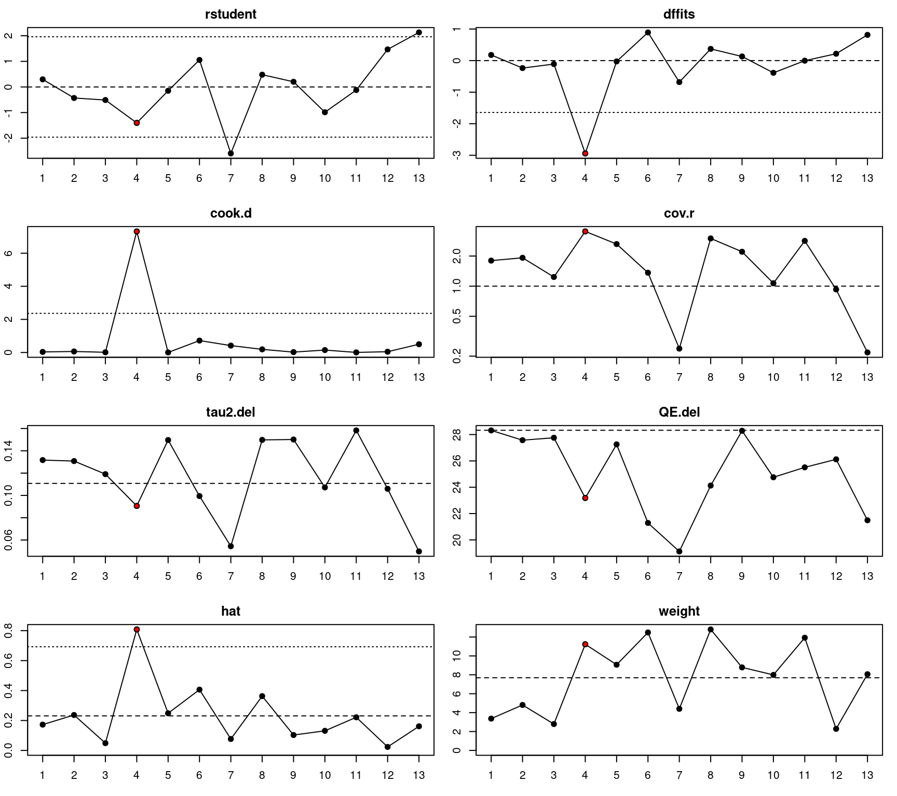
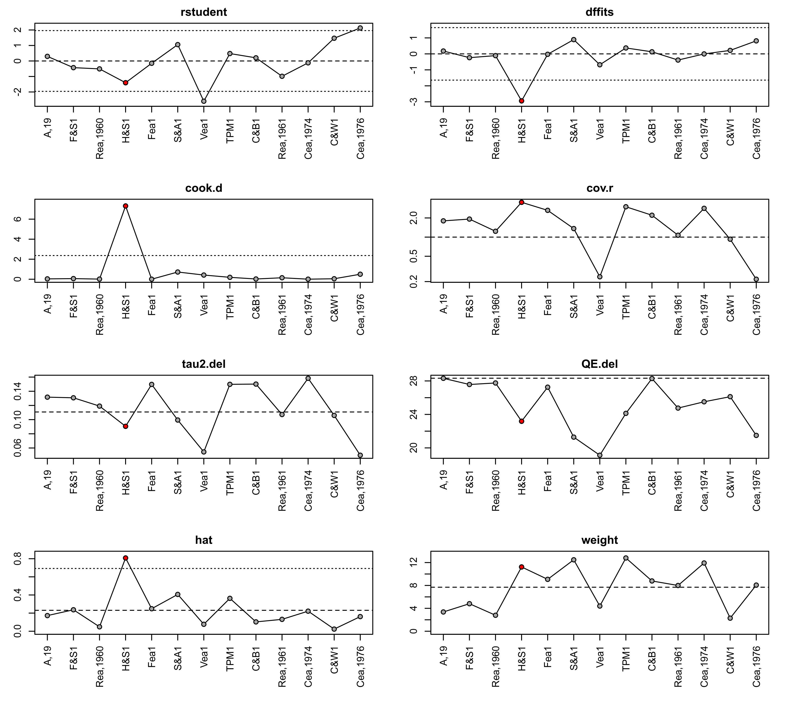
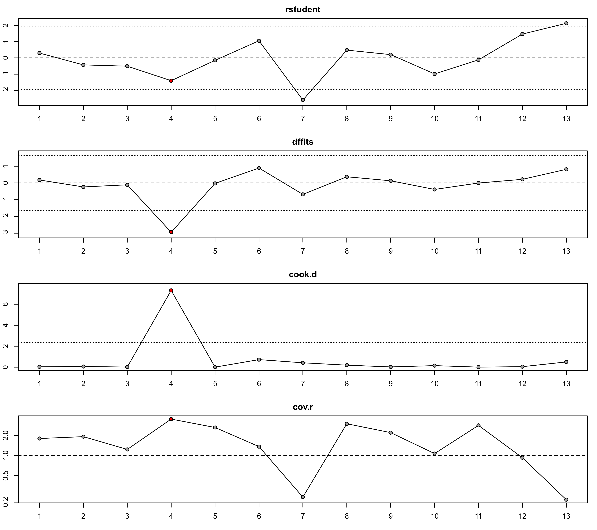

plot.infl.rma.uni.RdPlot method for objects of class "infl.rma.uni".
# S3 method for infl.rma.uni plot(x, plotinf=TRUE, plotdfbs=FALSE, dfbsnew=FALSE, logcov=TRUE, layout, slab.style=1, las=0, pch=21, bg="black", bg.infl="red", col.na="lightgray", ...)
| x | an object of class |
|---|---|
| plotinf | logical indicating whether the various case diagnostics should be plotted (the default is |
| plotdfbs | logical indicating whether the DFBETAS values should be plotted (the default is |
| dfbsnew | logical indicating whether a new device should be opened for plotting the DFBETAS values (the default is |
| logcov | logical indicating whether the covariance ratios should be plotted on a log scale (the default is |
| layout | optional vector of two numbers, indicating the number of rows and columns for the layout of the figure. |
| slab.style | integer to indicate the style of the x-axis labels: 1 = study number, 2 = study label, 3 = abbreviated study label. Note that study labels, even when abbreviated, may be too long to fit in the margin.) |
| las | integer between 0 and 3 to specify the alignment of the axis labels (see |
| pch | plotting symbol to use. By default, a filled circle is used. See |
| bg | color to use for filling the plotting symbol (the default is |
| bg.infl | color to use for filling the plotting symbol when the point is considered influential (the default is |
| col.na | color to use for lines connecting two points with |
| ... | other arguments. |
When plotinf=TRUE, the function plots the (1) externally standardized residuals, (2) DFFITS values, (3) Cook's distances, (4) covariance ratios, (5) leave-one-out \(\tau^2\) estimates, (6) leave-one-out (residual) heterogeneity test statistics, (7) hat values, and (8) weights. If plotdfbs=TRUE, the DFBETAS values are also plotted either after confirming the page change (if dfbsnew=FALSE) or on a separate device (if dfbsnew=TRUE).
A study may be considered to be ‘influential’ if at least one of the following is true:
The absolute DFFITS value is larger than \(3 \times \sqrt{p/(k-p)}\), where \(p\) is the number of model coefficients and \(k\) the number of studies.
The lower tail area of a chi-square distribution with \(p\) degrees of freedom cut off by the Cook's distance is larger than 50%.
The hat value is larger than \(3 \times (p/k)\).
Any DFBETAS value is larger than \(1\).
Studies which are considered influential with respect to any of these measures are indicated by the color specified for the bg.infl argument (the default is "red").
The cut-offs described above are indicated in the plot with horizontal reference lines. In addition, on the plot of the externally standardized residuals, horizontal reference lines are drawn at -1.96, 0, and 1.96. On the plot of the hat values, a horizontal reference line is drawn at \(p/k\). Since the sum of the hat values is equal to \(p\), the value \(p/k\) indicates equal hat values for all \(k\) studies. Finally, on the plot of weights, a horizontal reference line is drawn at \(100/k\), corresponding to the value for equal weights (in %) for all \(k\) studies. Note that all weights will automatically be equal to each other when using unweighted model fitting. Also, the hat values will be equal to the weights values (except for their scaling) in models without moderators.
The chosen cut-offs are (somewhat) arbitrary. Substantively informed judgment should always be used when examining the influence of each study on the results.
Viechtbauer, W. (2010). Conducting meta-analyses in R with the metafor package. Journal of Statistical Software, 36(3), 1--48. https://doi.org/10.18637/jss.v036.i03
Viechtbauer, W., & Cheung, M. W.-L. (2010). Outlier and influence diagnostics for meta-analysis. Research Synthesis Methods, 1(2), 112--125. https://doi.org/10.1002/jrsm.11
### meta-analysis of the log risk ratios using a mixed-effects model ### with two moderators (absolute latitude and publication year) res <- rma(measure="RR", ai=tpos, bi=tneg, ci=cpos, di=cneg, mods = ~ ablat + year, data=dat.bcg) inf <- influence(res) plot(inf)